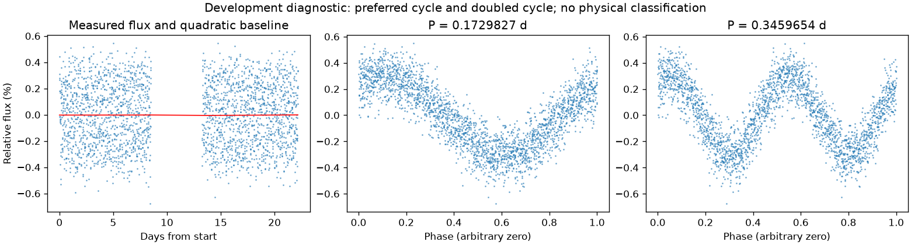
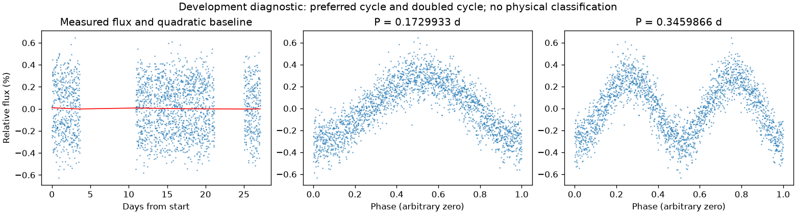

有重复信号，来源尚未充分检查
亮度重复周期约 0.17298799 天。这是优选亮度周期，未给出正式误差或物理分类。
第三版周期：0.1729827045334494 天；状态：preferred_lightcurve_cycle。

左图红线是缓慢基线；右面两图去除该基线。若未通过周期要求，两图只展示得分最高的竞争解释。
| 竞争周期（天） | 预测方法与改善 | 各组改善 | 通过初筛 |
|---|---|---|---|
| 0.3459702 | 交替循环：78.0% | 78.3% / 77.6% | 是 |
| 0.1729827 | 交替循环：77.7% | 77.4% / 78.1% | 是 |
| 0.3405025 | 交替循环：23.3% | 23.0% / 23.7% | 是 |
| 0.1749590 | 交替循环：19.2% | 18.9% / 19.4% | 否 |
| 0.1711084 | 交替循环：18.2% | 18.1% / 18.4% | 否 |
| 0.3499377 | 交替循环：18.0% | 17.8% / 18.3% | 否 |
| 0.0854259 | 交替循环：-43.5% | -45.6% / -41.5% | 否 |
| 0.0875704 | 交替循环：-57.7% | -57.5% / -58.0% | 否 |
“预测改善”衡量用一组周期的形状预测另一组，比只有缓慢基线好多少；负数表示更差。搜索和预测共用了资料，因此这不是可信概率，也不是独立验证。
第三版周期：0.17299328318220192 天；状态：preferred_lightcurve_cycle。

左图红线是缓慢基线；右面两图去除该基线。若未通过周期要求，两图只展示得分最高的竞争解释。
| 竞争周期（天） | 预测方法与改善 | 各组改善 | 通过初筛 |
|---|---|---|---|
| 0.3460179 | 交替循环：76.8% | 75.7% / 78.1% | 是 |
| 0.1729933 | 交替循环：76.1% | 75.3% / 76.8% | 是 |
| 0.3400455 | 交替循环：28.0% | 28.8% / 27.3% | 是 |
| 0.1707322 | 交替循环：14.3% | 13.2% / 15.5% | 否 |
| 0.3506812 | 交替循环：-2.0% | 1.1% / -5.3% | 否 |
| 0.1752641 | 交替循环：-4.3% | -4.7% / -3.9% | 否 |
| 0.0876607 | 交替循环：-17.2% | -16.7% / -17.6% | 否 |
| 0.0854254 | 交替循环：-35.1% | -35.3% / -34.9% | 否 |
“预测改善”衡量用一组周期的形状预测另一组，比只有缓慢基线好多少；负数表示更差。搜索和预测共用了资料，因此这不是可信概率，也不是独立验证。